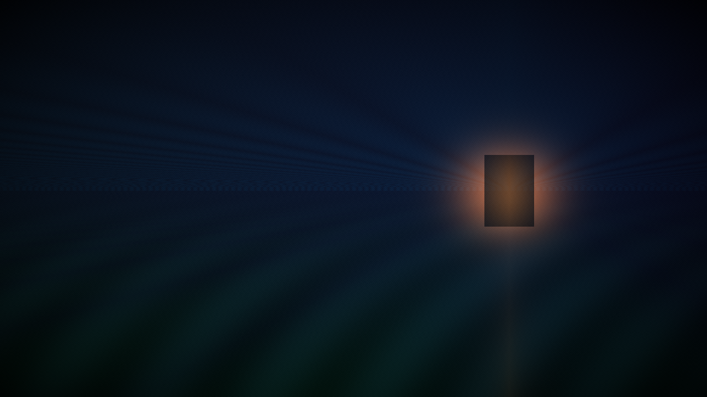
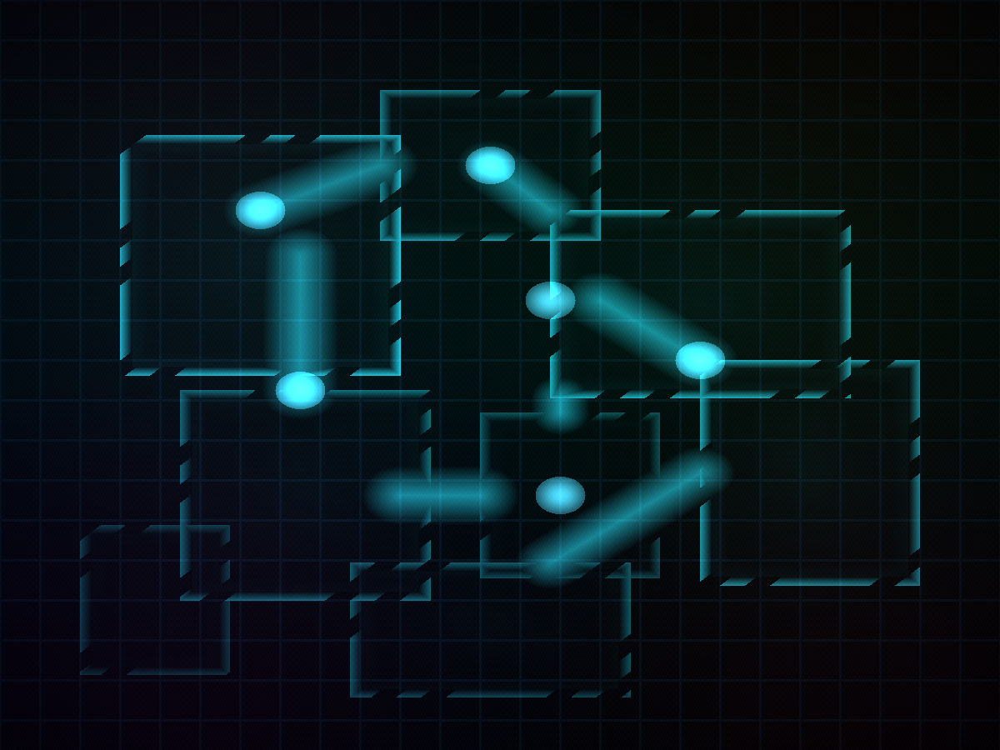
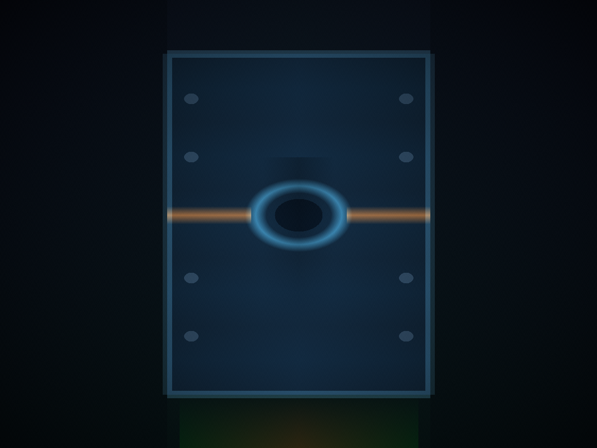

Metroid: stillheten i korridoren

6. august 1986 kom et diskspill til Famicom Disk System i Japan. Det het Metroid. Du var alene på Zebes. Kartet var fullt av hull. Musikken nynnet nesten ikke. Fire tiår senere, midt i en ny Nintendo-generasjon, er grepet fortsatt blant selskapets skarpeste: å gjøre stillhet, isolasjon og kartlesing til selve spillet — ikke til pynt i bakgrunnen.
Nintendo er verdensmester i glede. Mario ler. Zelda åpner horisonter. Animal Crossing vinker deg inn. Men ved siden av varmen har selskapet alltid hatt en kaldere linje — der du ikke får følge, der døren foran deg er stengt, og der den eneste tryggheten er at du husker hvor du har vært. Metroid er den linjen. Den lærte Nintendo å tie. Og i 2026, når mye av spillindustrien skriker for å bli husket, er stillheten fortsatt et fortrinn.
1986: alene på Zebes
Metroid ble laget av Nintendo R&D1 og Intelligent Systems, med Gunpei Yokoi som produsent. Scenarioet skrev Makoto Kano. Blant dem som tegnet figurene sto Yoshio Sakamoto — senere den som har holdt serien i hånden over mange år. Spillet kom til Famicom Disk System 6. august 1986, til NES i Nord-Amerika i august 1987, og til Europa i januar 1988.
På esken så det ut som et action-eventyr. Inni var det mer snikende. Du fikk ikke en kompis. Du fikk ikke en by. Du fikk et planetinteriør som føltes fiendtlig nettopp fordi det var tomt nok til at fantasien fylte gapene. Oppgraderingene satt: Morph Ball, bomber, Ice Beam. Hvert funn endret hva rommene lot deg gjøre. Du lærte å lese verden baklengs: «Dit kommer jeg ikke ennå. Dit kommer jeg når jeg har dette.»
Sakamoto har senere nevnt Ridley Scotts Alien (1979) som en stor påvirkning — etter at spillverdenen først var på plass. Nintendo kopierte ikke en skrekkfilm. De lot likevel en serie bygge spenning av ensomhet, midt i en tid da plattformglede ellers styrte. Hirokazu «Hip» Tanaka skrev musikk som nesten nektet å sette seg i hodet — helt til Mother Brain falt og lettelsen endelig kom. Stillheten var altså meningen, ikke et hull i produksjonen.
Kartet du tegner selv
Hvis Zelda lærte oss å undre oss, lærte Metroid oss å huske. Et Metroid-kart er ikke noe du får servert. Det er noe du fortjener. Du tegner det med føttene. Du husker heiser, blindgater, dører som ikke åpnet seg «den gangen». Under press blir du kartograf.
Derfor ble «metroidvania» et ord folk bruker om en hel sjanger: ikke bare fordi Castlevania senere plukket opp tråden, men fordi Metroid gjorde utforskning til noe du måtte lære deg. Nye evner endrer hva rommene betyr. Når du endelig snur en blindvei til en snarvei, er belønningen mer enn et nytt våpen — du forstår stedet bedre enn for et øyeblikk siden.

1994: Super Metroid setter standarden
Metroid II: Return of Samus (Game Boy, 1991) tok isolasjonen videre — jakt på en truet art, rom for rom. Så kom Super Metroid til Super Nintendo: Japan 19. mars 1994, Nord-Amerika 18. april samme år. Yoshio Sakamoto regisserte. Makoto Kano produserte. Nintendo R&D1 og Intelligent Systems bygde det som fortsatt er seriens klassiske definisjon.
Super Metroid er ikke bare «større Metroid» for spektaklets skyld. Den er mer presis. Atmosfæren er tykkere. Du kan bryte rekkefølgen, men verden henger likevel sammen. Du får lov til å være smart. Du får også lov til å bli redd for det du ikke ser ennå. Der mange samtidige spill fylte skjermen med forklaring, lot Super Metroid rommene snakke. Den brukes fortsatt som referanse når folk skal forklare hva Nintendo klarer når selskapet tør å stole på spilleren.
2002–2004: to retninger, samme nerve
Etter åtte års pause kom Metroid tilbake i 2002 på to fronter. Metroid Fusion (Game Boy Advance, Nord-Amerika november 2002) strammet grepet: mer fortelling, mer paranoia, en kropp som ikke lenger er trygg. Metroid Prime (GameCube, Nord-Amerika 18. november 2002), utviklet av Retro Studios, tok deg inn i første person — og oversatte likevel isolasjonen: skanning, atmosfære, et landskap du må lese for å overleve.
Zero Mission (Game Boy Advance, 2004) gjorde om det første spillet med moderne flyt — og viste at ideene fra 1986 tålte å bli skjerpet, ikke byttet ut. Det var ikke snakk om hvilken plattform som «vant». Det som telte, var at Nintendo og partnerstudioene skjønte at Metroid-nerven overlever formatbytte: 2D, 3D, håndholdt, stue. Så lenge du er alene med et ufullstendig kart, lever formelen.
Avstikkere, retur og Dread
Metroid: Other M (2010) viste hvor skjørt grepet er. Når fortellingen blir for styrende, og stillheten byttes ut med forklaring, mister serien noe av det som gjorde den unik. Other M er en del av historien nettopp fordi den synliggjør hva Metroid vanligvis ikke er — uten at vi trenger å lage mer drama av det.
Så kom returen. Metroid: Samus Returns (Nintendo 3DS, 15. september 2017) ble utviklet av spanske MercurySteam sammen med Nintendo, med Sakamoto som produsent. En remake av Metroid II — og en prøvestein. Fire år senere fulgte Metroid Dread til Nintendo Switch (8. oktober 2021), igjen MercurySteam sammen med Nintendo EPD. Det første originale sidescrollende Metroid-spillet siden Fusion.
Dread tok det gamle løftet på alvor: du er jaktet. Korridorene er ikke trygge. Kartlesingen er livsviktig. Sniking og romforståelse møtes. Serien trengte ikke å bli en skrekkfilm. Den trengte bare å huske at frykten i Metroid sitter i geografien — i dørene du ikke tør å åpne, og i dem du må.

Hvorfor stillheten fortsatt gjelder i 2026
Se rundt i spillåret 2026. Markedet er fullt av markører, pilemarkeringer, veiledningsbobler og stemmer som forklarer hva du nettopp så. Ofte snilt. Sjelden skarpt. Metroid argumenterer for det motsatte: stol på spilleren. La rommet være dårlig forklart. La kartet være et arbeid. La lydbildet ha hull.
Derfor betyr Metroid fortsatt noe for hvordan vi forstår Nintendo. Selskapet er ikke bare fest og farger. Det er også disiplin: å vite når man skal tie. Yokois R&D1-arv i det første spillet, Sakamotos lange vokterskap, Retros 3D-oversettelse, MercurySteams moderne 2D — alle er varianter av samme idé: isolasjonen er selve innholdet, ikke et hull som mangler utfylling.
Når en ny Nintendo-maskin lander, måles den gjerne i kraft og katalog. Det er greit nok. Men seriene forteller oss hva hardwaren er til for. Mario sier: legg til rette for glede. Zelda sier: legg til rette for undring. Metroid sier: legg til rette for at spilleren skal tåle å være alene — og likevel gå inn i neste korridor.
Korridoren som målestokk
Fra Famicom-disken i 1986 til Switch i 2021 er Metroid en påminnelse om at Nintendo kan være stille uten å bli tom. Stillheten i korridoren er ikke nostalgi. Den er et krav til hvordan spillet bygges: kartlesing, atmosfære, og tillit til at spilleren fyller gapene bedre enn en fortellerstemme.
I en tid der alt skal signalisere, blinke og forklare, er Metroid fortsatt Nintendos skarpeste motstemme — ikke fordi den er mørkest, men fordi den tør å la mørket gjøre jobben.
← Tilbake til nyheter · Uavhengig fanside — ikke tilknyttet Nintendo.